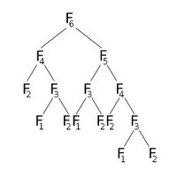

সূচনা
ধরো, হঠাৎ একদিন তোমার সাথে আমার দেখা হলো ভূতের গলির সামনে। আর তুমি দেখলে যে আমি গলা ফাটিয়ে "ফাহিম! ফাহিম!" করে চিল্লাচ্ছি। তোমার নির্ঘাত মনে হবে আমাকে ভূতে ধরেছে। তুমি হয়তো কিছুক্ষণ বোকা বোকা হয়ে আমার দিকে তাকিয়ে থাকবে, আর ভাবতে শুরু করবে আমাকে কোন কবিরাজের কাছে নেয়া যায় ঝাড়ফুঁক করার জন্য। তারপর হয়তো তোমার বন্ধুটা পেট চেপে হাসতে শুরু করবে, আর বলবে - "আহা! ছেলেটা পুরাই রিকার্সিভ হয়ে গেছে!"
তখন হয়তো তুমি ভ্রু কুঁচকাবে, আর জিজ্ঞেস করবে, "রিকার্সিভ? সেটা কি খায় না মাথায় দেয়?"
রিকার্সিভ ফাংশন
একটা ফাংশন যখন নিজেই নিজেকে ডাকাডাকি করতে থাকে। তখন আমরা বলি ফাংশনটা রিকার্সিভ। কিন্তু সমস্যা হলো, ফাংশন জিনিসটা কি? আর সেটা শুধু ডাকাডাকি করবেই বা কেন? সে নিশ্চই কুরবানির ছাগল না, নাকি? :|
বেশ তো, আমি তোমাকে ফাংশন বুঝাবো। খালি একটা শর্ত! তোমাকে সুকুমার রায়ের একটা গল্প পড়তে হবে।
বেজায় গরম। গাছতলায় দিব্যি ছায়ার মধ্যে চুপচাপ শুয়ে আছি, তবু ঘেমে অস্থির। ঘাসের উপর রুমালটা ছিল, ঘাম মুছবার জন্য যেই সেটা তুলতে গিয়েছি অমনি রুমালটা বলল ``ম্যাও!'' কি আপদ! রুমালটা ম্যাও করে কেন?
চেয়ে দেখি রুমাল তো আর রুমাল নেই, দিব্যি মোটা-সোটা লাল টক্*টকে একটা বেড়াল গোঁফ ফুলিয়ে প্যাট্ প্যাট্ করে আমার দিকে তাকিয়ে আছে!
আমি বললাম, ``কি মুশকিল! ছিল রুমাল, হয়ে গেল একটা বেড়াল।''
অমনি বেড়ালটা বলে উঠল, ``মুশকিল অবার কি? ছিল একটা ডিম, হয়ে গেল দিব্যি একটা প্যাঁক্*পেঁকে হাঁস। এ তো হামেশাই হচ্ছে।''
আমি খানিক ভেবে বললাম, ``তা হলে তোমায় এখন কি বলে ডাকব? তুমি তো সত্যিকারের বেড়াল নও, আসলে তুমি হচ্ছ রুমাল।''
বেড়াল বলল, ``বেড়ালও বলতে পার, রুমালও বলতে পার, চন্দ্রবিন্দুও বলতে পার।'' আমি বললাম, ``চন্দ্রবিন্দু কেন?''
শুনে বেড়ালটা ``তাও জানো না?'' বলে এক চোখ বুজে
ফ্যাচ্*ফ্যাচ্ করে বিশ্রীরকম হাসতে লাগল। আমি ভারি অপ্রস্তুত হয়ে গেলাম।
মনে হল, ঐ চন্দ্রবিন্দুর কথাটা নিশ্চয় আমার বোঝা উচিত ছিল। তাই থতমত খেয়ে
তাড়াতাড়ি বলে ফেললাম, ``ও হ্যাঁ-হ্যাঁ, বুঝতে পেরেছি।''
তো ধরো, তোমার একটা রুমাল ছিল, তুমি দিলে একটা ফুঁ, ওমনি রুমালটা বিড়াল হয়ে গেলো। এখানে আমার ইনপুট হচ্ছে রুমাল, ফুঁ দেয়াটা হচ্ছে আমার প্রসেসিং, আর বিড়ালটা হচ্ছে আমার আউটপুট। তো আমরা খুব ভান করি আমরা খুব বুদ্ধিমান, সেজন্য আমরা খুব কম কথা বলি, আর এই কথাটা এভাবে লিখি -
বিড়াল = ফুঁ( রুমাল )
বেশিরভাগ মানুষ এত কষ্ট করে ফুঁ ও লিখতে যায় না, তারা লিখে
বিড়াল = f( রুমাল )
এটার মানে হচ্ছে আমি যদি একটা রুমালকে ধরে f মেরে দেই তাহলে আমি একটা বিড়াল পেয়ে যাবো। f মারা মানে কি, সেটা আমরা ধরে নিচ্ছি আমরা জানি। :)
মাঝে মাঝে এমন হয়, ধরো তুমি কাচ্চি বিরিয়ানি রাঁধতে চাচ্ছো, তো এখন রুমাল কে ধরে f মেরে দিলে তো কোন লাভ হবে না! কারণ রুমালকে f মেরে দিলে সেটা তো বিড়াল হয়ে যাবে, কাচ্চি বিরিয়ানি আসবে কোত্থেকে?
তো আমাদের করতে হবে কি, একটা আলু নিতে হবে, এক বাটি চাল নিতে হবে, তেল নিতে হবে, একটু লবণ নিতে হবে, আর একটা ছাগল চুরি করে আনতে হবে। তো ব্যাপারটা একই রকমই দাঁড়াবে শুধু f না মেরে একটা 'রান্না' মেরে দিতে হবে।
তো তখন ব্যাপারটা দাঁড়াবে এরকম -
কাচ্চি বিরিয়ানি = রান্না( আলু, চাল, তেল, লবণ, চুরি করা ছাগল )
ফাংশন, যেটা রিকার্সিভ
আচ্ছা তাহলে, আমরা এখন জানি ফাংশন কি। তো আসো আমরা একটা ফাংশন তৈরী করি।
sum(n) = 1 + 2 + 3 + ... + n
সুকুমার রায় যখন প্রথম এই ফাংশনটার চেহারাটা দেখেছিল, সে কি লিখেছিল জানো?
সত্যি বলছি কুস্তি ক'রে তোমার সঙ্গে পারব না।
মন্টা আমার বড্ড নরম, হাড়ে আমার রাগ্টি নেই,
তোমায় আমি চিবিয়ে খাব এমন আমার সাধ্যি নেই!
মাথায় আমার শিং দেখে ভাই ভয় পেয়েছ কতই না-
জানো না মোর মাথার ব্যারাম, কাউকে আমি গুঁতোই না?
তো সত্যি বলছি, এই ফাংশনটা দেখে ডরানোর কিচ্ছু নেই। এখানে আমরা ফুঁ মারার বদলে sum মারবো, আর ইনপুট হচ্ছে n , যেখানে n মানে যেকোন একটা সংখ্যা( ১, ২, ৪২০, ৬৯, ০, ৩১৪) বা যেকোন কিছু - আর sum মারলে বিড়াল হওয়ার বদলে n টা ১ থেকে n পর্যন্ত সব সংখ্যার যোগফল হয়ে যাবে।
যেমন ধরো
sum(5) = 1 + 2 + 3 + 4 + 5 = 15
sum(6) = 1 + 2 + 3 + 4 + 5 + 6 = 21
sum(7) = 1 + 2 + 3 + 4 + 5 + 6 + 7 = 28
বুঝছো? হুমম?
না বুঝলে কিন্তু কামড়াবো!
একটা মজা দেখো, আমরা যদি 6 কে একটা sum মেরে তারপর সেটাকে sum(6) বানিয়ে তার সাথে 7 যোগ করে দেই, তাহলে আমরা sum(7) পেয়ে যাচ্ছি! ওয়াও! কি অদ্ভূত ব্যাপার! তাই না? কি আশ্চর্য ব্যাপার! :O একদমই ছিল রুমাল, হয়ে গেলো বিড়াল!
তাহলে দেখো, আমরা লিখতে পারি,
sum(7) = sum(6) + 7
আমরা এই জিনিসগুলোও তাহলে লিখতে পারি
sum(6) = sum(5) + 6
sum(5) = sum(4) + 5
sum(4) = sum(3) + 4
sum(3) = sum(2) + 3
...
sum(0) = 0 // :( বেচারা!
সমস্যা হলো, এভাবে ঘন্টার পর ঘন্টা সব সংখ্যা লেখার চেয়ে আমরা যেহেতু কম কথা বলি, আমরা লিখতে পারি
sum(n) = sum(n-1) + n
তবে যদি n = 0 হয় তবে সেটা ০
সি প্রোগ্রামিং ল্যাঙ্গুয়েজে আমরা লিখতে পারি
if( n == 0 ) return 0;
else return n + sum( n-1 );
}
এখন দেখো, এই ফাংশনটা করছে কি, নিজের নামের আরেকটা ফাংশনকে ডাকাডাকি করছে ওর কাজের একটা অংশ করে দেয়ার জন্য। তাই না? এটাকেই আমরা বলি রিকার্শন।
তো সহজ কথায়, যখন একটা ভালো(!) মানুষ ফাংশনের ঘাড়ে একটা ভূত চেপে বসে আর সেটা নিজের নাম ধরে ডাকাডাকি শুরু করে দেয়, তখন সেটাকে বলে রিকার্শন।
কিছু উদার উদাহরণ
ফিবোনাকি সংখ্যা
অনেক অনেক দিন আগে ইতালিতে একটা বিশাল মাথাওয়ালা গণিতবিদ থাকতো যার নাম ছিল ফিবোনাকি। ফিবোনাকির ছিল অনেক ঝাকড়া চুল, আর সেখানটায় নাকি অনেক গাবদা গাবদা উকুন ছিল। তো সে করতো কি খুব মাথা চুলকাতো, আর সারাদিন বসে বসে ফ্যাঁচ ফ্যাঁচ করে কাঁদতো। তো একদিন সে গেলো গঙ্গা নাপিতের দোকানে। সেখানে গিয়ে সে বগল কামালো আর মাথার সব চুল ফেলে দিলো আর তারপর মুহাহাহাহাহা করে একটা বিশাল বিটকেলে হাসি দিয়ে লুঙ্গি হাতে ধরে নাঁচতে নাঁচতে বাসায় ফিরে আসলো।
কিন্তু উকুন ফেলে দিলে কি হবে, আকাশে একটা শকুন উড়ছিল মিগ২৯ নিয়ে। তো সেই শকুনটা করলো কি ওর মিগ২৯ নিয়ে পুঁউউউউ করে উড়ে আসলো আর একটা ছোট্ট অণূবিক্ষণিক মিসাইলের ডগায় এক জোড়া উকুন নিয়ে সেটা শিউউউ করে ছুঁড়ে মারলো ফিবোনাকির মাথায়।
তো প্রথম মাসে ফিবোনাকির মাথায় ছিল ১ জোড়া উকুন। (সবমিলে ১)
প্রথম মাসের শেষে ১ জোড়াই থাকলো। (সবমিলে ১)
দ্বিতীয় মাসের শুরুতে সেই জোড়া করলো কি, আরো ১ জোড়া উকুনের জন্ম দিলো।
তো সেই মাসের শেষে ২ জোড়া উকুন থাকলো। (সবমিলে ২)
তৃতীয় মাসে এই ২ জোড়া করলো কি আরো ২ জোড়া জন্ম দিলো, আর মাসের শেষে প্রথম জোড়া মরে গেলো কারণ কোন উকুন ২ মাসের বেশি বাঁচে না।
তো সেই মাসের শেষে ৩ জোড়া উকুন থাকলো। (সবমিলে ৩)
তুমি যদি এভাবে হিসেব করতেই থাকো, তাহলে দেখবে পরের মাসে ৫ জোড়া উকুন হয়, তার পরের মাসে ৮ জোড়া।
তো জিনিসটা দাঁড়ায় এরকম ১, ১, ২, ৩, ৫, ৮, ১৩, ২১, ৩৪, ...
তো ফিবোনাকি খুব মন খারাপ করে বসে বসে উকুনের কামড় খেতেই থাকলো তো খেতেই থাকলো। ন্যাড়া হবার পরদিন বেলতলায় যাওয়ার পর ওর মাথায় একটা বেল পড়েছিল বলে সে আবার চুল সব ফেলে দেয়ার সাহস পেলো না। তো সে বসে বসে কামড় খেয়ে খেয়ে উকুন গুনতে গুনতে হঠাৎ দেখলো, আরি আজিব! আগের দুই মাসের উকুন সংখ্যা যোগ করলেই এই মাসে মাথায় কয়টা উকুন থাকবে সেটা বের হয়ে যায়। তো সে ইয়ে ইয়ে ইয়ে বলে নাচানাচি শুরু করলো, আর ওর নাচ দেখে সবাই ভাবলো সে কি না কি আবিষ্কার করে ফেলেছে - তো সেজন্য সে খুব খুব বিখ্যাত হয়ে গেলো।
আসলে ব্যাপারটা তেমন কঠিন কিছু না, এই মাসে যারা বেঁচে থাকবে, তাদের বয়স যেহেতু ২ এর কম হতে হবে, তাহলে অবশ্যই তাদের জন্ম ঠিক আগের মাসে, অথবা তার আগের মাসের আগের মাসে হতেই হবে তাই না?
তাহলে দেখো, এখানেও একটা রিকার্শন আছে।
fibonacci( 5 ) = fibonacci( 4 ) + fibonacci( 3 )
তাই না? এটার জেনারেল ফর্ম হচ্ছে
fibonacci( n ) = fibonacci( n-1 ) + fibonacci( n-2 )
তবে, যদি n = 0 অথবা n = 1 হয় তাহলে fibonacci(n) = 1
এটা আমরা সি তে লিখলে সেটা হবে -
if( n == 0 || n == 1 ) return 1;
else return fibonacci( n-1 ) + fibonacci( n-2 );
}
এখন সমস্যা হলো কি - যখনই আমার 6 কে ফিবোনাকি মারতে হচ্ছে, তখন সে 5 আর 4 এর ফিবোনাকিকে ডাকছে, আবার 5 ডাকছে 4 আর 3 এর ফিবোনাকিকে। ব্যাপারটা অনেকটা এরকম হচ্ছে। (এখানে ০ মাস বলে কিছু নেই - ১ থেকে ওর গোনা শুরু করেছে)
From Wikipedia, the free encyclopedia
একবার তাকাও, দেখো f(2) কে সেই রকম ভাবে ডাকাডাকি করা হচ্ছে। পাঁচ পাঁচ বার! আবার f(3) কে ডাকা হচ্ছে তিন তিন বার! তো এখানে অনেক অনেক বার ডাকাডাকি করা হচ্ছে, আর কাওকে ডাকাডাকি করলে সে আরো অন্য অনেককে ডাকাডাকি করছে। তো প্রচুর বার ডাকাডাকি করে সবাই খুব ক্লান্ত হয়ে যাচ্ছে, আর আমাদের প্রচুর ভালো ভালো সময় নষ্ট হচ্ছে, যেগুলো দিয়ে আমরা প্রচ্চুর কার্টুন দেখতে পারতাম আর অনেক অনেক গল্পের বই পড়তে পারতাম। তুমি যদি f(10) কে ডাকাডাকি করো তাহলে দেখবে সে f(2) কে ডাকতে ডাকতে মাথাই খারাপ করে ফেলছে।
তো আমরা একটা কাজ করতে পারি, আমরা যদি মনে রাখি f(3) এর মান কতো, আর সেটা লিখে রাখি, তাহলে যখনই কেউ f(3) কে ডাকবে, সে পাগলের মতো ওর মান জানার জন্য f(2) আর f(1) কে বারবার ডাকাডাকি করবে না। তাই না?
তাহলে আমরা প্রোগ্রামটা এভাবে লিখতে পারি -
int array[20];
int fibonacci( int n ) {
if( n == 0 || n == 1 ) return 1;
else if( array[n] == 0 ) // ami oke ekbaro process kori nai - or khub mon kharap! :(
array[n] = fibonacci( n-1 ) + fibonacci( n-2 ); // ye! o khushi! :D
return array[n];
}
এটা আর আগেরটার একটাই পার্থক্য - আমি যেহেতু একবার প্রসেসিং এর পরই array[n] এর মধ্যে লিখে রাখছি fibonacci(n) এর মান - আমার বারবার সেটা প্রসেস করা লাগছে না। আমার সময় বেঁচে যাচ্ছে কার্টুন দেখার জন্য।
এই যে কান্ডটা আমরা এই মাত্র করলাম, এটার একটা গাল ভরা নাম আছে - ডাইনামিক প্রোগ্রামিং। যখন কেউ নতুন ডাইনামিক প্রোগ্রামিং শেখে, সে টানা কয়েকদিন ধেই ধেই করে নাচানাচি করে, আর সবার সাথে ডাইনামিক প্রোগ্রামিং নিয়ে কথা বলতে চায়। তারপর ঘুমাতে গেলে রিকার্শন স্বপ্ন দেখে, আর ঘুমের ঘোরে বিড়বিড় করে, ডাই ডাই-নামি-ক প্রো-প্রো-গ্রামিং! ইয়ে! গুড়ুড় গুড়ুড়!
ডেপ্থ ফার্স্ট সার্চ
সুপার রোমিও মার্চের শুরুতে টুম্ব রেইডার লারা ক্রফটের প্রেমে পড়লো। কিন্তু লারা ক্রফট ছেলেদেরকে যত না ভালোবাসতো তারচে' বেশি ভালোবাসতে কবরের মধ্যে গিয়ে দৌড়াদৌড়ি করতে। সুপার রোমিও তবুও অনেক আশা নিয়ে চুইঙ্গামের মত লেগে থাকলো, কিন্তু এর কিছুদিন পর লারা ক্রফটের সাথে সুপারম্যানের ইয়ে হয়ে গেলো। সুপার রোমিও মুখ বাঁকা করে বসে থাকলো, কারণ এবার সে বুঝতে পারলো ওর আর কোন চান্সই নেই! :'(
এদিকে হলো কি, ওর চুপচাপ গুটিসুটি মেরে উদাস উদাস হয়ে বসে থাকা দেখে বিলকিস বাণু ওর প্রেমে পড়ে গেলো। কারণ বিলকিস বাণু কবিতা পড়তে খুব ভালোবাসে আর ওর ধারণা একটু দেবদাস দেবদাস টাইপের ছেলে না হলে নাকি প্রেম জমে না। কিন্তু সুপার রোমিও তো বিলকিস বাণুর সাথে প্রেম করবেই না। তো সে করলো কি, শহরে পালিয়ে গেলো - মতিঝিলে গিয়ে এফিডেফিট করে নিজের নাম পাল্টে রাখলো, সুপার মারিও। আর সেই ফাঁকে সে দেখলো একটা বিশাল বিলবোর্ডে বিপাশা বসু একটা সাবান নিয়ে 'কিছু একটা' করছে একদম সব্বার সামনে(চিচিচি!), ঠিক রাস্তার উপরে!(চিচিচিচি!) তো সেই 'কিছু একটা' দেখে তার মনে প্রেম প্রেম ভাব হলো, সে ঠিক করলো বিপাশা বসুকে গিয়ে বলবে ওর সাথে প্রেম করতে।
কিন্তু সমস্যা হলো, বিপাশা বসু থাকে হচ্ছে প্যান্ট ঢিলা মাস্তানের পাড়ায়। এবং কেউ একজন বিপাশা বসুর সাথে প্রেম নিবেদন করতে গেলেই সে ধরে কষে একটা মাইর দিয়ে দেয়। এইজন্যই নাকি সুপারম্যান কখনো বিপাশা বসুর কাছাকাছি যেতে পারেনি। তার ছিঁড়া মজনু এসে বলল ওর কাছে নাকি একটা ম্যাপ আছে, সেখানে পরিষ্কার করে লেখা আছে কোথায় কোথায় দেয়াল আর কোথায় কোথায় প্যান্ট ঢিলা মাস্তানের চ্যালারা অপেক্ষা করছে, আর কোথায় বিপাশা বসু।
ম্যাপটা দেখে বলতে হবে, সুপার মারিও বিপাশা বসুর কাছাকাছি যেতে পারবে কিনা। আর যদি পারে, তাহলে সে যত তাড়াতাড়ি সম্ভব তত তাড়াতাড়ি প্রেম নিবেদন করতে চায়। কারণ সে শুনেছে স্পাইডারম্যানও নাকি কাছে ধারেই আছে। সে যদি আগে এসে চামে চামে প্রেম নিবেদন করে দেয়, তাহলে বিপাশা বসুর কাছে সুপার মারিও কোন বেইল ই পাবে না!
সুপার মারিও চিৎকার করে বলল, দেখাও তোমার ম্যাপ! তার ছিঁড়া মজনু ওর পিছনের পকেট থেকে একটা ময়লা গ্রাফ পেপার বের করলো, সেটাতে লেখা ছিল
MX.....XB.
..X..X.X..
...X.X.X..
.....X....
তারপর তার ছিঁড়া মজনু করলো কি, এদিক ওদিক তাকিয়ে তারপর ফিসফিস করে তোমাকে ওর ম্যাপটা বুঝিয়ে দিলো - M টা হলো মজনুর বাড়ি, যেখানে ওরা এখন বসে বসে ফন্দি করছে, আর X গুলো হলো প্যান্ট ঢিলা মাস্তানের চ্যালাদের আড্ডা মারার চায়ের দোকান, ভুলেও ওদের কাছাকাছি গেলে ওরা ধরে স্ক্রু টাইট করে দিবে। আর . গুলোতে কোন সমস্যা নাই - ওখান দিয়ে হাঁটা যাবে। কিন্তু এই পাড়ার নিয়ম হচ্ছে সব কিছুতে সোজাসুজি করতে হবে, কোণাকুনি হাঁটা যাবে না। ও কোণাকুনি হাঁটে এটা শুনলে কিছুতেই বিপাশা বসু ওকে বিয়ে করবে না।
তার ছিঁড়া মজনুকে সুপার মারিও জিজ্ঞেস করলো, কতক্ষণ হাঁটতে হবে। সে বলল, প্রতিটা . পার হতে এক মিনিট লাগবে। তারপর সে জানতে চাইলো, আসলে কখনো পৌছাতে পারবো তো। তখন তার ছিঁড়া মজনু ভাবতে শুরু করলো, কিন্তু অনেকক্ষণ মাথা চুলকিয়েও সে কিছুতেই বের করতে পারলো না কিছু। সুপার মারিও খুব বিরক্ত হয়ে ঘন্টাখানেক ওর মাথা চুলকানো দেখলো, তারপর তোমার কাছে চলে আসলো, কারণ তুমি নাকি কম্পিউটার দিয়ে খুটখাট করে কঠিন কঠিন সব কাজ করে ফেলতে পারো।
হুমম, এখন দেখো আমাদের কি করতে হচ্ছে। মজনু তার ঘর থেকে উপরে, বামে, ডানে আর নিচে যেতে পারছে। আমরা যদি সাধারণ গ্রাফ পেপারের মতো নাম্বারিং করি তাহলে ঘরগুলোর কো অর্ডিনেট হচ্ছে এরকম
(0,0) (0,1) (0,2) ....
(1,0) (1,1) (1,2) ....
(2,0) (2,1) (2,2) ....
.
.
.
মানে যদি কোন ঘর (i,j) হয় তাহলে ওর উপর নিচের ঘরগুলোর কো অর্ডিনেট এরকম হবে।
(i-1,j-1) (i-1, j) (i-1,j+1)
( i,j-1) ( i, j) ( i,j+1)
(i+1,j-1) (i+1, j) (i+1,j+1)
খেয়াল করো, মারিও কিন্তু প্রতিটা ঘরে গিয়ে একই কাজ করবে, উপরে যাবার চেষ্টা করবে, বামে যাবার চেষ্টা করবে, ডানে যাবার চেষ্টা করবে, তারপর নিচে যাবার চেষ্টা করবে - যদি কখনো দেখে সে চায়ের দোকানের দিকে এগোচ্ছে সে ফিরে আসবে, তারপর আবার বাকি দিকগুলো দেখবে।
যেহেতু সে একই কাজ বারবার করছে সেহেতু আমরা একটা ফাংশনকে রিকার্সিভলি ডেকেই পুরো কাজটা করতে পারি তাই না? তাহলে জিনিসটা দাড়াবে এরকম -
int found = 0;
void check( int i, int j ) {
if( map[i][j] == 'B' ) found = 1; // mario can reach bipasa
else if( map[i][j] == 'X' ) return;
else {
check(i-1,j);
check(i,j-1);
check(i,j+1);
check(i+1,j);
}
}
মূল ব্যাপারটা অনেকটা এরকমই - তবে তোমার চেক করতে হবে তুমি কখনো বাউন্ডারির বাইরে চলে যাচ্ছো কিনা। সেজন্য ফাংশনটায় এরকম একটা লাইন জুড়ে দিতে হবে।
এই খোঁজাখুঁজির ব্যাপারগুলোকে বলা হয় সার্চিং আর এই মাত্র আমরা রিকার্সিভ ভাবে যে সার্চটা করলাম এটার নাম হচ্ছে Depth First Search কারণ সে যখনই দেখছে সে ঘরটাতে ঢুকতে পারছে, সে সেই ঘরটা থেকে আরো গভীরে গিয়ে খোঁজাখুঁজি করছে।
রিকার্শন হচ্ছে প্রোগ্রামিং এর সবচে' গুরুত্বপূর্ণ টপিকগুলোর একটা। অনেককিছুই সহজে করার জন্য আমাদের রিকার্শন ব্যবহার করতে হয়। রিকার্শনের পরিষ্কার ধারণা না থাকলে আসলে অনেককিছুই খুব কঠিন হয়ে যায়।
এই জন্যই আমার এত বেশি বকবক করা! :D
রিকার্শন সম্বন্ধে আরো পড়তে পারো জোবায়ের হাসানের ব্লগে, Attacking Recursion এবং তারপর Practice Recursion এ একগাদা প্রবলেম দেয়া আছে সলুশন সহ।
আর টপকোডারের টিউটোরিয়ালও পড়ে দেখতে পারো।
শুভ কামনা! ;)